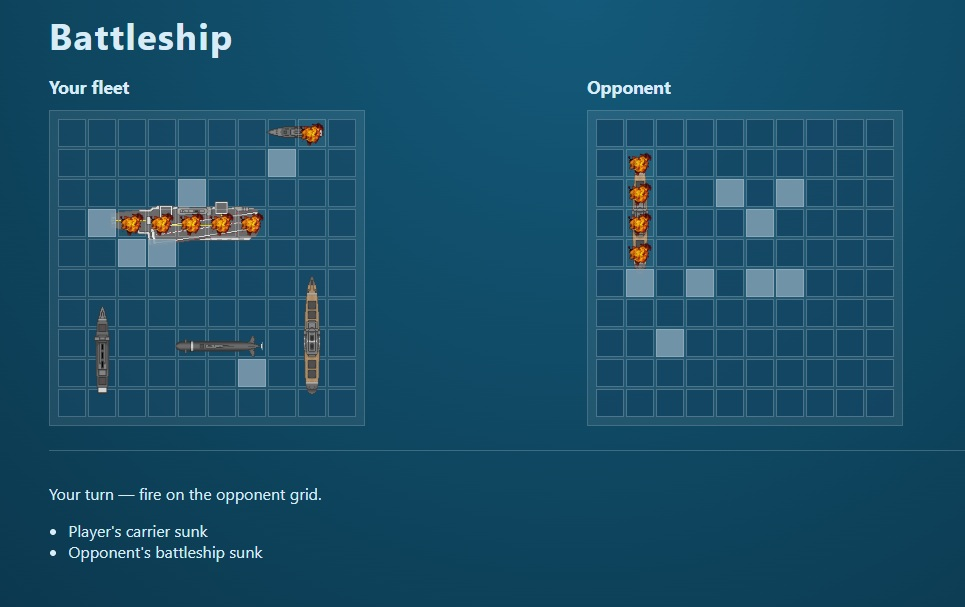
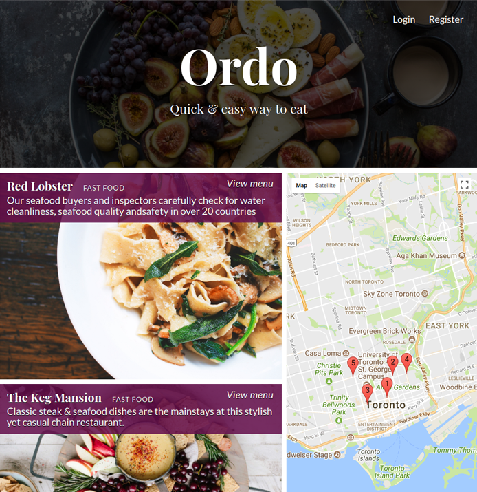

Sebastian Namek
Web developer with a passion for writing clean, modular, code, with an interest in dev ops. Takes pride in coming up with elegant solutions to complicated problems by looking at the big picture.
Projects

Ordo
Ordo is a site for users to browse menus from a list of restaurants. They can select one or more dishes and place an order for pick-up. They will receive a notification via Twilio when their order is ready. Restaurant owners can add and edit their menu items. Both clients and restaurant owners can view their current and past order histories.